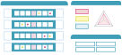
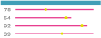
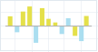
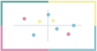
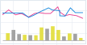
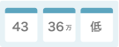
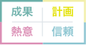

トップ
ログイン
お問い合わせ
どんな事でお困りですか ?
検索
利用シーン別ガイド
SALES SCOREを様々なシーンでご活用いただく方法をご紹介します。
受検者の営業活動の特徴を
見える化したい
ポテンシャルの高い人材を
採用したい
離職率を改善したい
成績優秀層を分析したい
自社の特徴を理解したい
社員のコミュニケーションを
改善したい
検査結果画面の解説
SALES SCOREのアウトプット項目について紹介します。
適性検査のアウトプット

データサマリー

データサマリー
データサマリー
企業傾向分析

全体比較

営業タイプ傾向

High-Low分析
構成比比較
検査結果詳細

表示される予測値

表示される営業タイプ
主な機能
SALES SCOREの利用方法及び、ツールに表示される項目について紹介します。
管理者
・管理者の登録・編集
・表示される管理者情報
従業員
・従業員の登録・編集
・表示される従業員情報
応募者
・応募者の登録・編集
・表示される応募者情報
実績データの登録
・実績の登録・編集
・分析対象範囲の指定
・成績区分の指定
適性検査
・適性検査推奨環境
・受検メールの送信
・ＵＲＬの発行
・受検者のステータス
・検査実施項目
ダッシュボード機能
・実績データ分析機能
・運用サポート機能
契約について
・契約情報の確認
・解約の方法